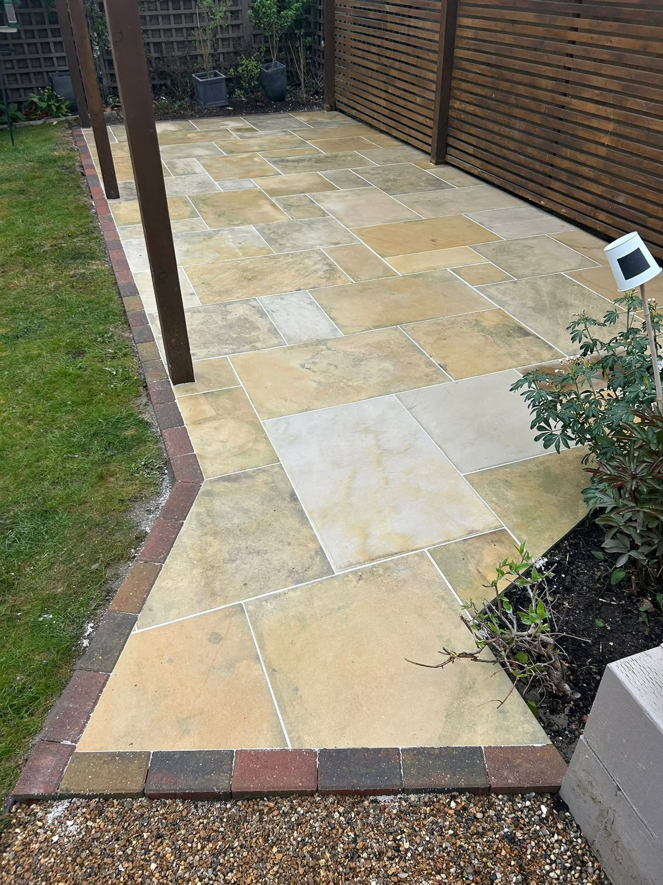
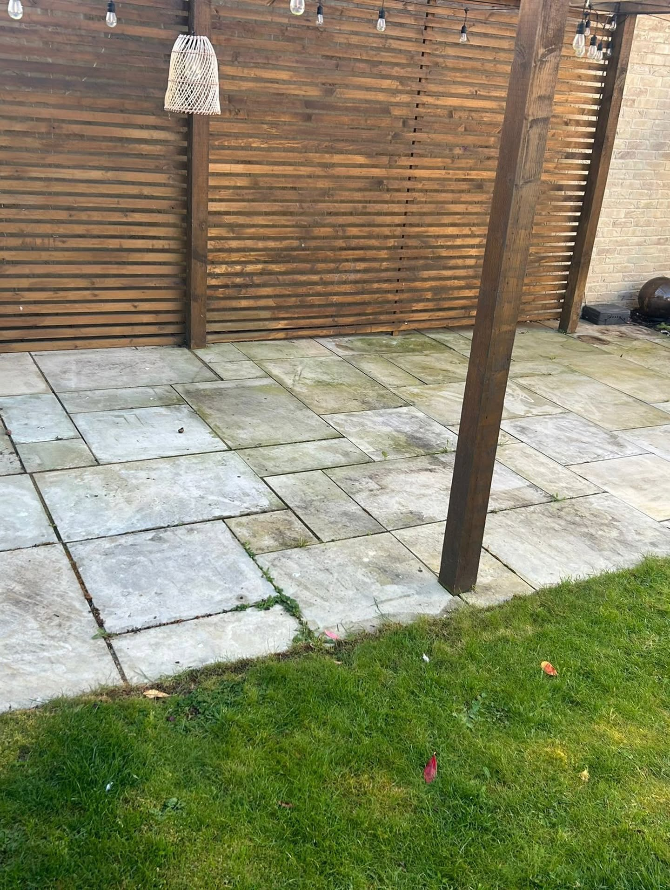
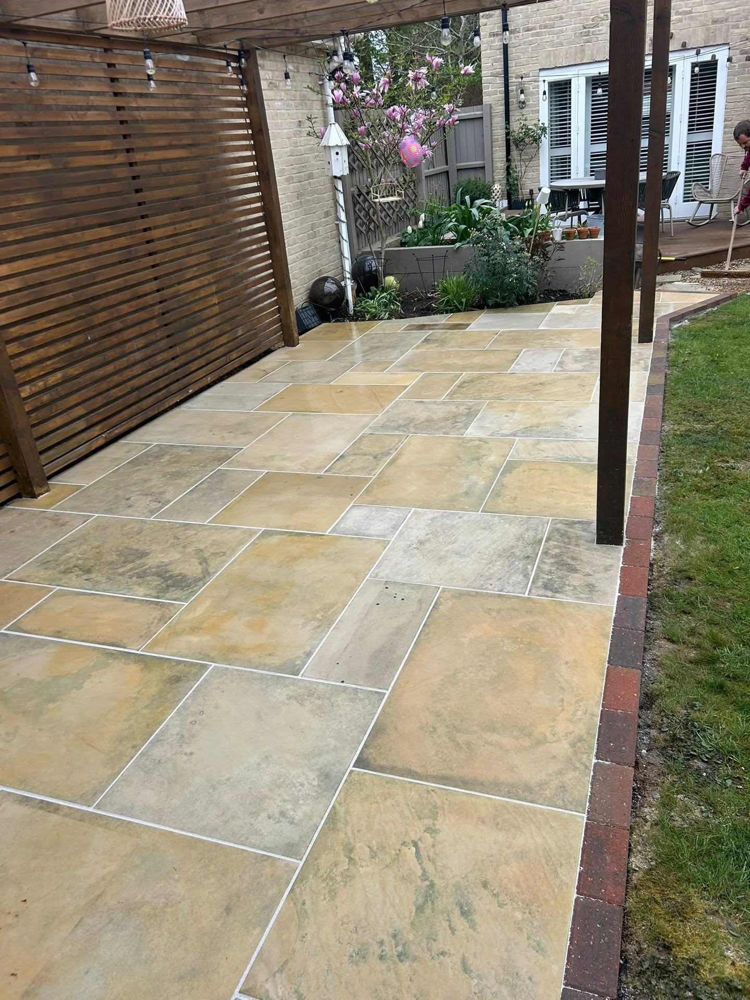
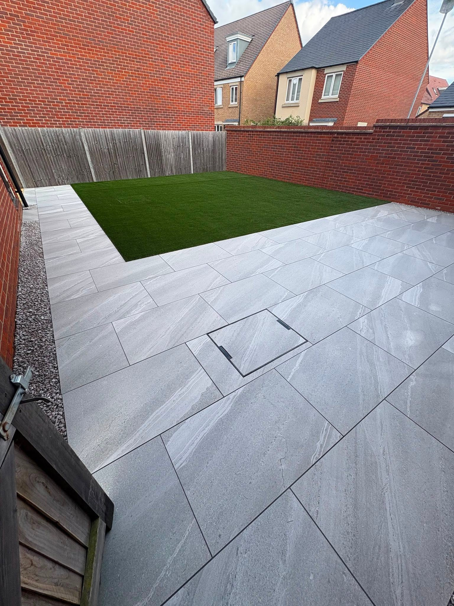
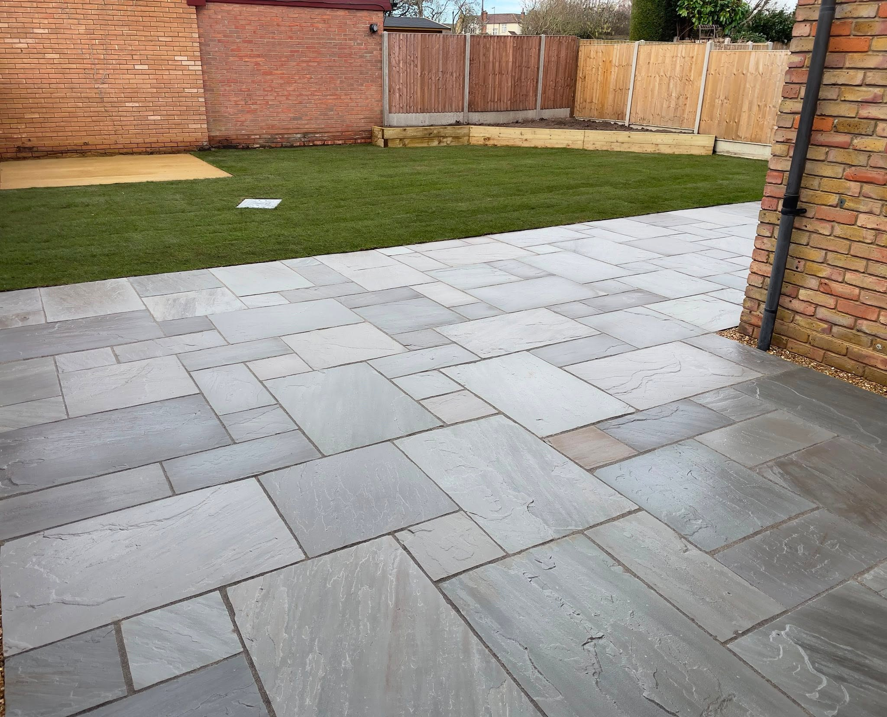
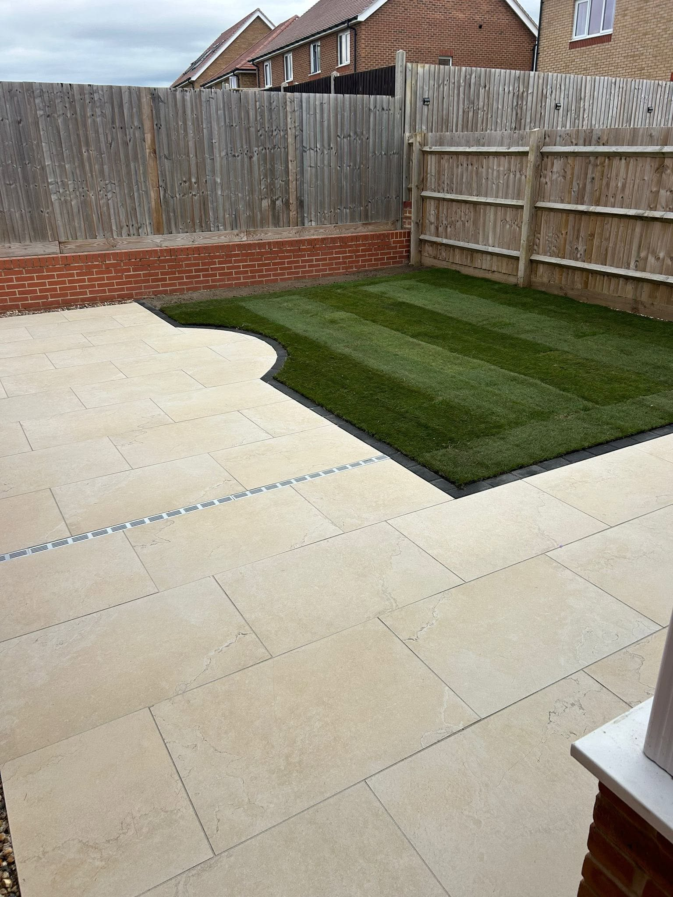
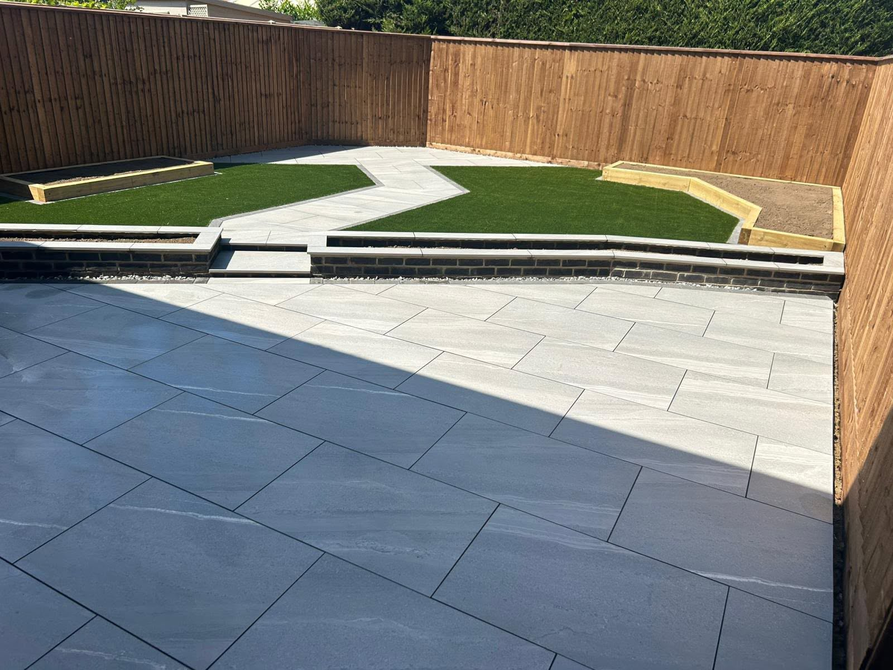
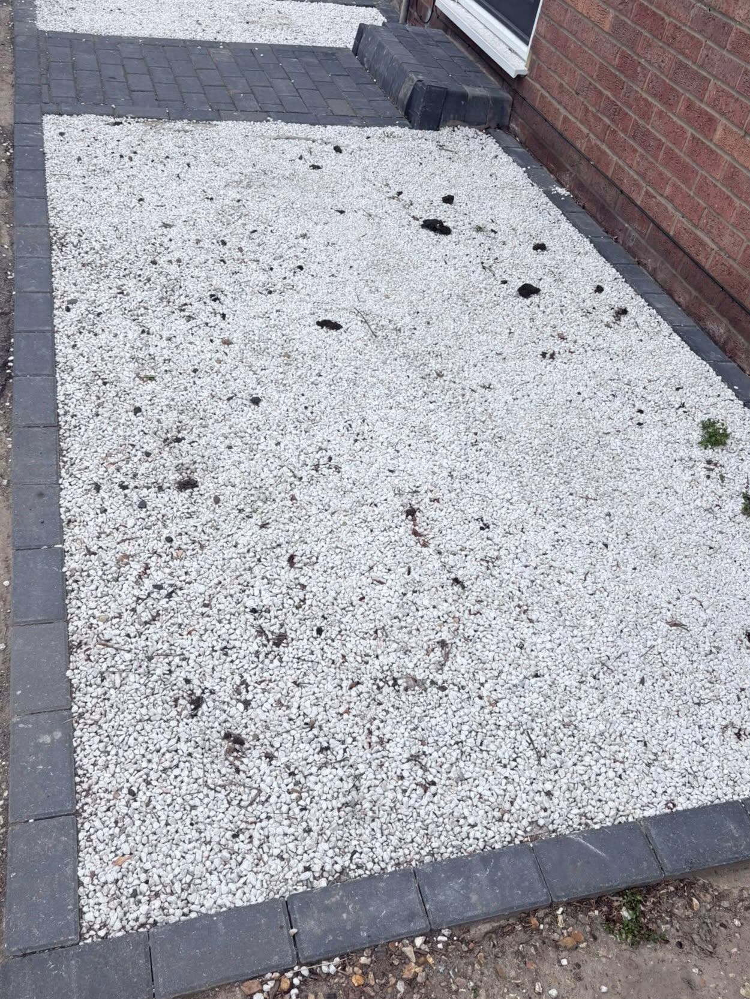
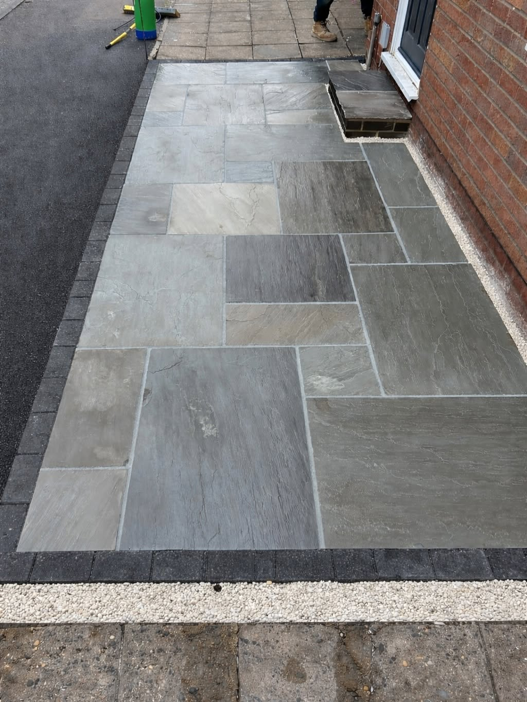
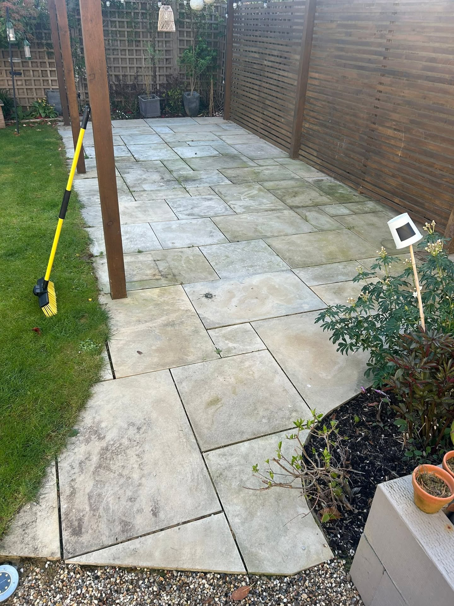

Patios & Paving
Natural stone, porcelain, block paving and carefully finished outdoor living areas.
From premium patios and paving to turfing, fencing and complete garden transformations, Willow Lane creates outdoor spaces with lasting quality.
Willow Lane Gardens & Landscapes Ltd delivers professional landscaping throughout Cambridge and the surrounding area. From the first design ideas to the final clean-down, every project is handled with care, practical experience and close attention to detail.
Complete hard and soft landscaping services for gardens of every size, delivered by an experienced Cambridge team.
Natural stone, porcelain, block paving and carefully finished outdoor living areas.
Fresh lawns, ground preparation and practical solutions for tired or uneven gardens.
Gravel, block paving and durable entranceways designed around your property.
Secure boundaries, decorative screening and timber features built to last.
Decking, raised beds, pergolas and garden structures tailored to your space.
Thoughtful layouts, planting schemes and low-maintenance garden planning.
Practical groundwork, channels and preparation for long-lasting installations.
One experienced team managing the whole project from clearance to completion.
This Cambridge garden was refreshed with professional cleaning and finishing, restoring the natural stone and bringing the entertaining space back to life.

Finished result
Before
AfterReal projects completed by the team, including paving, turfing, raised gardens and low-maintenance transformations.







Tell us what you want to change and arrange a convenient site visit.
Receive a straightforward quote covering the agreed work and materials.
Our team completes the work carefully, keeping the project organised.
We inspect the finished space with you and leave everything clean and ready.
Contact Willow Lane Gardens & Landscapes Ltd for a free quotation in Cambridge and surrounding areas.